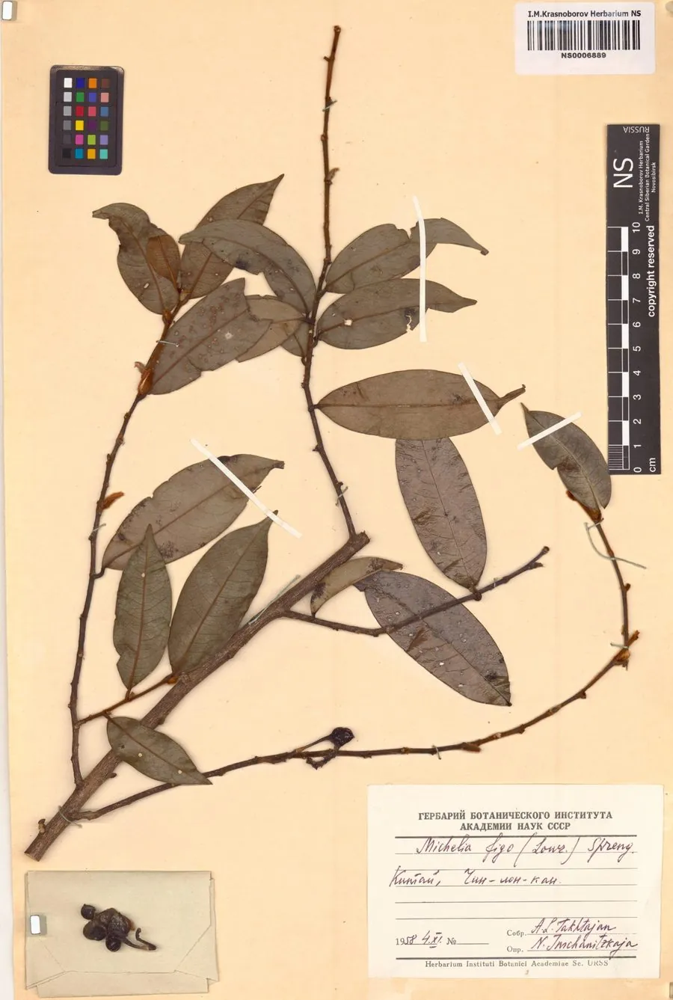

乔木 · 植物界
含笑 Michelia figo

中国南方常见的常绿灌木或小乔木，花朵半开半合、香气清甜似香蕉，是庭院中常见的香花植物，也可盆栽。
- 分类
- 门被子植物门纲木兰纲目木兰目科木兰科属含笑属
- 栖息环境
- 海拔 1000 米以下的山坡林下与庭院，喜温暖湿润、半阴
- 地理分布
- 中国广东、福建、浙江等地，南方各地广泛栽培
- 保护级别
- 暂无评估；中国未列入国家重点保护野生植物名录
物种志
含笑为常绿灌木或小乔木，高可达 3 m，树皮灰褐色，小枝密被褐色绒毛；叶片互生，椭圆形至倒卵状椭圆形，革质。花期 3–5 月，花单生于叶腋，花被片 6 枚、淡黄色，边缘常带紫红色，花朵半开半合，香气清甜似香蕉；聚合蓇葖果穗状，种子红色。
含笑原产中国广东、福建及浙江等地，中国南方广泛栽培，喜温暖湿润、半阴环境，适宜深厚肥沃、排水良好的酸性土壤，不耐寒。花朵半开半合，像人含笑不语，因此得名；花香清甜似香蕉，是庭院、公园中常见的香花植物，北方多作盆栽。花可提取芳香油，叶与花可入药；含笑耐修剪，也可用于绿篱与造型。
形态与习性
- 株高可达 3 m，小枝密被绒毛
- 花期3–5 月，花淡黄色芳香
- 果期8–9 月，聚合蓇葖果
- 光照喜半阴，忌强光暴晒
- 土壤深厚肥沃的酸性壤土
- 主要用途庭院香花、提取芳香油、绿篱与盆栽
趣味知识
- 含笑的花朵半开半合，像人含笑不语，因此得名。
- 含笑的花香清甜，闻起来像香蕉，因此也被称为“香蕉花”。
- 含笑喜半阴环境，夏季强光暴晒容易导致叶片灼伤。